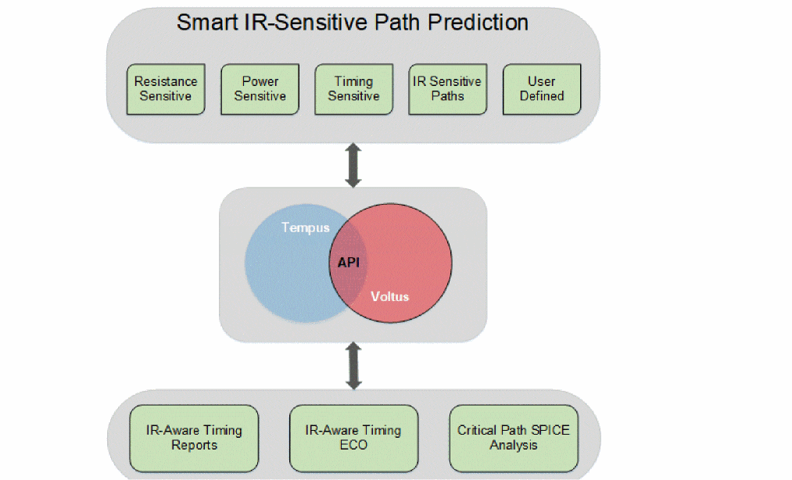
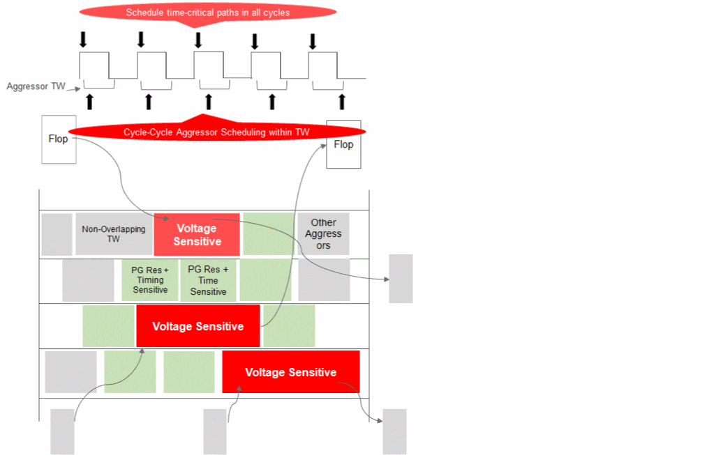

Tempus Power Integrity Analysis Overview
The Tempus Power Integrity Analysis (Tempus PI) solution provides a capability to run IR analysis that is timing aware, and timing analysis that is IR-aware. Tempus PI is a seamless integration of the Tempus static timing analysis (STA) and Voltus power and IR drop technologies. Both IR analysis and STA analysis can be performed on a single platform, so no external file or database transfer is required.
Traditionally, the IR-aware STA analysis mechanisms involve running either vector-based or vectorless dynamic simulations to compute the IR drop for each instance. As both these approaches are not truly timing-aware, it is very difficult to identify all potential IR-induced STA violations using these approaches.
The primary objective of the Tempus PI flow is to identify timing-critical and IR-sensitive timing paths, to accurately predict IR drop on these paths with directed vectorless analysis, and to enable automated fixing of these critical paths using Tempus ECO. The IR-sensitive timing paths are paths that may have sufficient positive slack but degrade significantly with IR drop. This timing/sensitivity-driven IR analysis is multi-cycle (transient IR simulation), functional, and vectorless. It also involves propagating the states/events of the scheduled critical paths through the fanout combinational logic using the Voltus state propagation engine.
The IR drop and timing events are natively aligned within the tool because Tempus STA analysis and Voltus IR analysis share all information, such as IR drop, timing windows, and switching within the timing windows.The following diagram illustrates the Tempus-Voltus integration in the Tempus PI flow:

The following are the key features of the Tempus PI flow:
- Identify IR-sensitive paths - the critical paths are timed using the traditional VDD margins on cell delays using max IR drop. The IR-sensitive paths are not critical paths but can be critical in the IR conditions. These IR-sensitive paths are identified among many paths, such as the resistance sensitive paths, power sensitive paths, timing sensitive paths, IR-sensitive paths for neighboring cells, and user-defined paths. The IR-sensitive critical paths are scheduled to switch in all cycles of the transient IR simulation.
- Create functional path switching scenarios - it creates realistic worst-case switching scenarios for the path and for the environment around it. In this flow, the software is aware of the delays along the path, and also the delays of paths in the neighborhood. It creates switching scenarios that are timing slack and timing path aware.
-
Identify proximity aggressors - it finds proximity aggressors around voltage and time-critical instances based on power-grid resistance and timing sensitivity. These proximity aggressors are modeled to switch at different times within the timing windows from cycle to cycle. The other aggressors are modeled using the vectorless algorithm to meet activity target and package effects.
Figure -2 Tempus PI Flow

- Calculate impact of delay/timing on voltage and time critical paths using cycle-cycle voltage statistic.
Following is a comparative analysis of a slack report (histogram of timing and number of paths/endpoints for the given design) from the traditional timing signoff flow and a slack report from the Tempus PI flow:
Here, you can observe the following:
- There are a total of 2092 paths.
- In the case of the traditional timing signoff flow, there are no negative slacks, and the slack bin starts at the +50ps to +60ps range. The worst path is in the +10 to +20ps slack range.
- In the case of the Tempus PI true signoff flow, 71 paths are failing timing with negative slack values. The worst path is in the -30ps to -40ps range.
-
Using the Tempus PI generated vectors with a more aggressive path analysis in the neighborhood, slack has moved to a negative range. This indicates a major shift in the overall delay.
These 71 failing paths that can affect performance on silicon can be fixed using the Tempus PI ECO feature.
Return to top